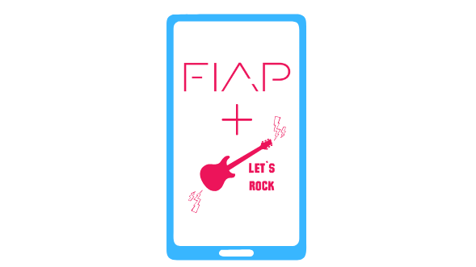

Os games são uma forma popular de entretenimento que evoluiu de simples pixels para experiências imersivas e realistas. Com narrativas complexas e gráficos impressionantes, os jogos criam universos virtuais que cativam os jogadores. Além disso, os games também têm sido utilizados como ferramentas educacionais e podem unir pessoas por meio de jogos online.
MOBILE

Dispositivos móveis, como smartphones e tablets, oferecem portabilidade e acesso a uma ampla gama de recursos e serviços por meio de aplicativos. Eles permitem o acesso à internet, fornecendo informações, entretenimento e facilitando o trabalho remoto. As lojas de aplicativos oferecem uma variedade de opções para atender às necessidades e interesses dos usuários.
TECH
A tecnologia desempenha um papel essencial em nossas vidas, transformando diversos aspectos, desde comunicação até trabalho e entretenimento. Ela engloba uma ampla gama de áreas, incluindo dispositivos eletrônicos, software e infraestrutura de rede. Avanços tecnológicos têm proporcionado dispositivos mais poderosos, como smartphones e laptops, permitindo-nos acessar informações, comunicar-nos e realizar transações de forma mais eficiente. A tecnologia também impulsiona o desenvolvimento de inteligência artificial, melhorando a automação e criando novas oportunidades em diversas indústrias.